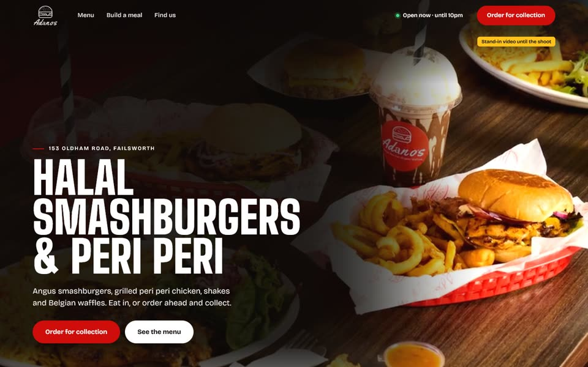
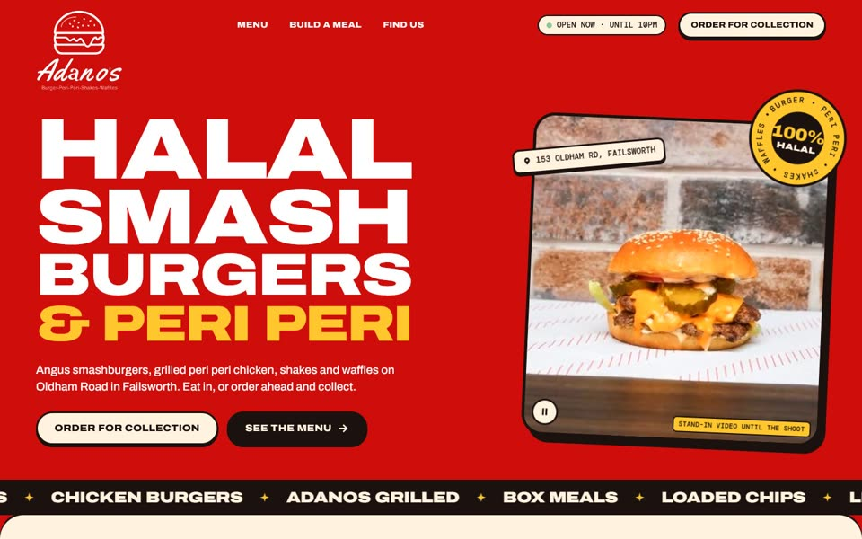
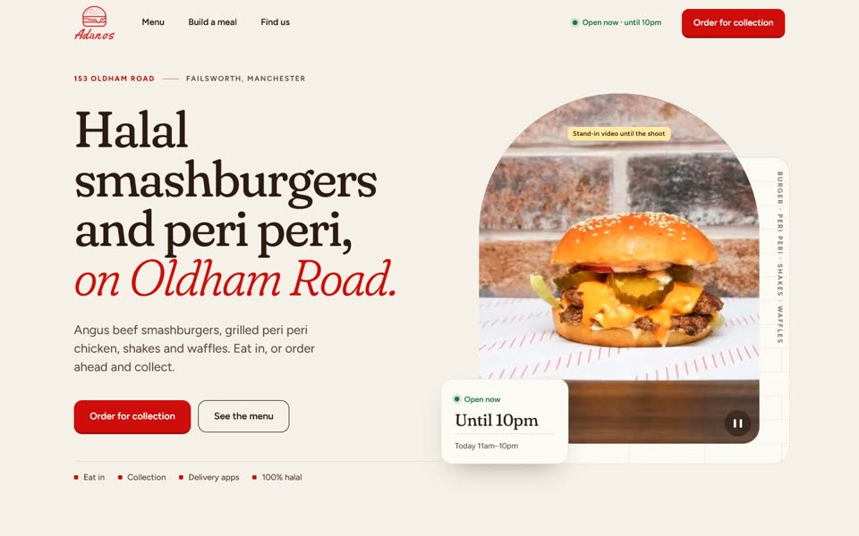

Version 1
After Dark
Dark and cinematic. The film fills the screen, then the food comes close up as you scroll.
Preview
The same shop, menu and prices in three different designs. Each one is a complete site with a homepage and a menu page. Open them on a phone and on a computer, then pick the one that feels right.

Dark and cinematic. The film fills the screen, then the food comes close up as you scroll.

Loud and bright, like a poster wall. Big type, the brand red turned right up, and a heat dial for the peri peri sauces.

Light and calm, built from the shop itself: white tiles, red booths and wood. A searchable menu sits on the homepage.